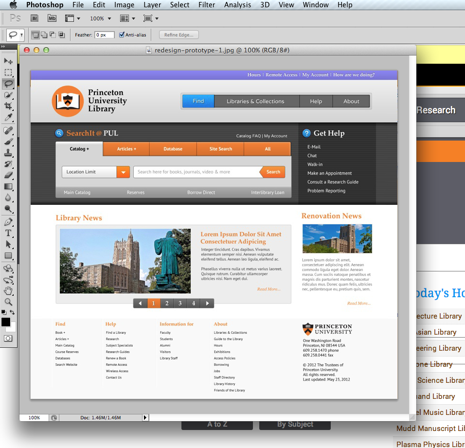

Responsive Web Design
Concepts and Tools
October 11, 2013 - METRO Mobile Computing SIG
Kevin Reiss @kevinreiss
Who am I?
Currently at Princeton Univeristy Library
Web Developer / Designer
Many Years as a Systems Librarian
Responsive is A New(ish) Approach to Web Design
- It will give your content strategy a new focus
- It's cost effective: no need for a seperate mobile application
- Front End Web Development is Changing Faster than ever before
- The technology stack required responsive is the tip of the iceberg
First a Word about the Web


The Web is Fluid
It needs a new approach..
...it also requires a different way of thinking. Rather than quarantining our content into disparate, device-specific experiences, we can use media queries to progressively enhance our work within different viewing contexts.
The Main Idea
We need to embrace uncertainity
The point of creating adaptive sites is to create functional (and hopefully optimal) user experiences for a growing number of web-enabled devices and contexts.
What's the Opposite of Uncertainty?
A picture of a webpage
Built With Photoshop
This is how Print Design Works
This is how a lot of Web Design Still Works
This is bad..
For Three Groups:
- Developers - who need to translate it into HTML/CSS.
- Content Strategists/Site Managers - who get locked into a rigid mindset and want to fill up all that space.
- For Administrators - who expect it to look exactly like the picture.
Actually this discussion has been going on awhile...
The web’s greatest strength, I believe, is often seen as a limitation, as a defect. It is the nature of the web to be flexible, and it should be our role as designers and developers to embrace this flexibility, and produce pages which, by being flexible, are accessible to all.
The Dao of Web Design - John Alsop, 2000. As quoted in "Responsive Web Design by Ethan Marcotte.
What can we do about this?
Never Open Photoshop Again and do the following
- Design in the Browser
- Get back to your technical roots
- Build sites using estabilished, common user interface patterns
- Convention over configuration
- Focus on what is unique about your organization
One side benefit:
The new Photoshop is a lot cheaper than the old one.
However, some assembly is required. This photoshop will require to use the command line to work effectively.
You will want to use a computing platform where it is easy to install nodejs and ruby.
Hint: neither of those is fun on Windows
What's Missing?
The big e-commerce sites haven't necessary caught on yet - titling towards highly information sites.
The Responsive Web - Getting Started
- Meet the Challenge of the Uncertain Web
- Your Content is Now Mobile. - Karen McGrane
- Listen to her Drupalcon Keynote
- This talk could be a librarian's manifesto
- The key to mobile is a consistent content strategy combined with structured data
What do you users really come to your site for?
- Technical Troubleshooting?
- Research Help?
- Connect to subscription resources?
- Renew/Request a Book?
Things they don't come for
- A giant carousel filled with.. something
- Stock images of smiling patrons or your library shelves
- A link to every single other page on your website
Do Not Forget
If people want to do something on the internet, they will want to do it using their mobile device. Period.
Don't take away parts of your core service to meet the goal of going responsive.
Foundational Responsive Technologies
CSS 3
- Media Queries
- Web Fonts - See Google Fonts
- Gradients, Rounded Corners
The Three Basics Construct of Responsive Design
As defined by Ethan Marcotte
- A Fluid Grid
- Fluid Media
- Media Queries
Getting Started with Grids
Two are wildly popular
- Bootstrap - Now Defaults to "Mobile" first
- Foundation
These Are:
- Great for rapid prototyping
- Provide common web design elements
A Couple Complaints About These Systems
- One complaint: these can become constraining and "Overclassed"
- They can result in cookie cutter sites - sometimes that's okay
- Review the complaints
The Standard Media Query Strategy
- One base default media Query (In Bootstrap it's the smallest size)
- Styles to be applied when matched by different media queries are wrapped within that query
- Can get rather unwieldy on large projects with a lot of overrides.
Tool Time
Other Important Tools
Utilites that help you cope in the mobile web.
Normalize.css
Resets for the modern web. Used by many common responsive grid systems
Modernizr
Detct HTML5/CSS3 Features in the current Browser
Feature Detection over User Agent Sniffing
The "Shims"
Make Older Browsers Do New Things
- HTML5shiv - Make Older Browsers provide default styling for HTML5 semantic elements
- Respond.js - Make IE8 & Earlier understand media queries
- Selectivzr - Make older browsers understand many CSS3 pseudo-classes
Better Icons Through CSS3
- Font Awesome
- A Bootstrap project
- Infinitely resizable icons
Bower
Like all the previous tools?
Manage all of the above through the command line
Requires a functional node.js environment
You Will Need A Functional Ruby Environment
Sass is a ruby gem
> gem install sass
SASS Features
- Variables
- Functions - built-in helpers for common CSS tasks
- Nesting Groups of Selectors
- Reusable Components of CSS - Mixins
- Low learning curve - Syntax is very similar to CSS
- .scss file extension
SASS Benefits
Four big wins
- Large projects become more maintainable and readable
- Re-use of CSS can go beyond copy and paste
- Repetitive and verbose tasks become simple (think image sprites)
- Leverage the power of a full programming language to manage grids and breakpoint calculations
Compass - An Essentail Sass Development Tool
- Compass is also a ruby gem. See config.rb in a SASS project directory
- > gem install compass
- Compass compiles your SASS to CSS for use in the browser
- Provides many extensions for common styling, typography, and CSS features
- Never write a vendor prefix (webkit-,-ms, etc.) again
Using Sass with Zen Grids
- Zen-grids is a compass extension and a Ruby Gem
- > gem install zen-grids
- It allows you to define complex, "semantic" grids
- Some Examples
- When integrated with the breakpoint compass extension it can easily support complex media queries.
Set up your SASS project directory
> compass create (my project name)
Review the config.rb file
Add Zen-grids, breakpoint, and other extensions
Zen Grids Example
- Barebones HTML Example
- Include the mixims for zen-grids and breakpoint
- Let's define our grid
- Have Compass watch our sass directory
- CSS will be compiled on the fly
- Let's define our breakpoints
Add Another Library: Buttons
- > gem install sassy-buttons
- Example the partial file - _sassybuttons.scss
- Define some of our own buttons in style.scss
Responsive Support in Tools We Use
Wordpress
- Now 2013 theme ships with responsive baked in.
- Using Sass and Compass with Wordpress.
And if you really want to get ahead, read about web components.